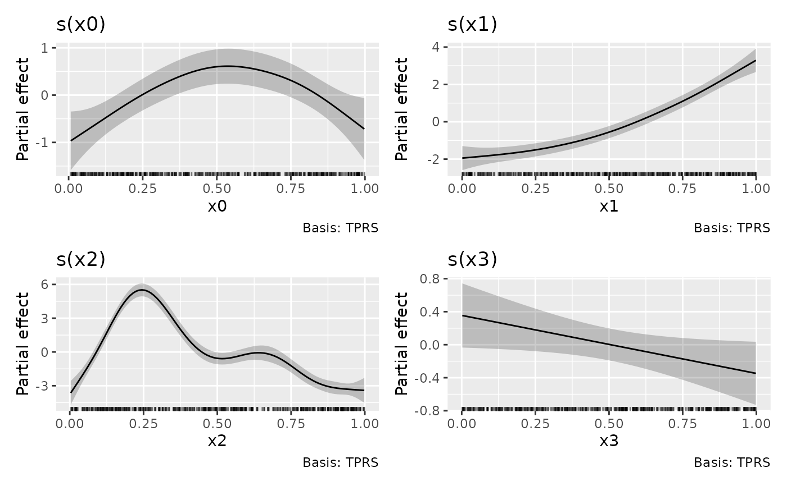
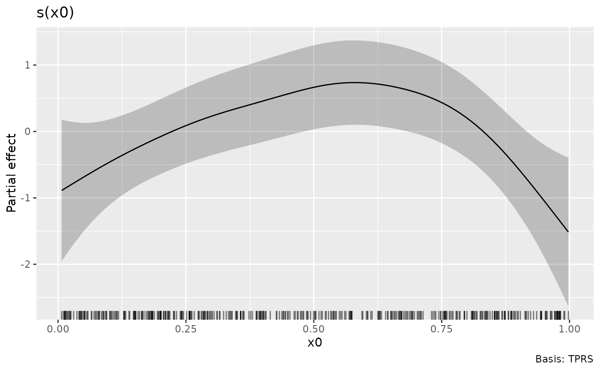

Plots smooth and parametric contributions from a fitted GAM model using
ggplot2::ggplot().
For models fitted by mgcv::gamm(), assemble() and draw() use the
fitted gam component.
Usage
# S3 method for class 'gam'
assemble(
object,
data = NULL,
select = NULL,
parametric = NULL,
terms = NULL,
residuals = FALSE,
scales = c("free", "fixed"),
ci_level = 0.95,
n = 100,
n_2d = 50,
n_3d = 16,
n_4d = 4,
unconditional = FALSE,
overall_uncertainty = TRUE,
constant = NULL,
fun = NULL,
dist = 0.1,
rug = TRUE,
distinct_rug = TRUE,
contour = TRUE,
grouped_by = deprecated(),
ci_alpha = 0.2,
ci_col = "black",
smooth_col = "black",
resid_col = "steelblue3",
contour_col = "black",
n_contour = NULL,
partial_match = FALSE,
discrete_colour = NULL,
discrete_fill = NULL,
continuous_colour = NULL,
continuous_fill = NULL,
position = "identity",
angle = NULL,
ncol = NULL,
nrow = NULL,
guides = "keep",
widths = NULL,
heights = NULL,
crs = NULL,
default_crs = NULL,
lims_method = "geometry_bbox",
wrap = TRUE,
caption = TRUE,
envir = NULL,
surface = c("raster", "tile", "3d"),
surface_3d = list(),
ci_3d = FALSE,
ci_3d_alpha = 0.15,
ci_3d_col = "grey60",
back_transform = FALSE,
re_levels = NULL,
mrf_plot = c("effects", "qq"),
interval = c("confidence", "simultaneous"),
n_sim = 10000,
n_cores = 1,
seed = NULL,
interval_method = c("auto", "gaussian", "bootstrap", "shape"),
frequentist = FALSE,
shape_source = c("gaussian", "bootstrap"),
...,
variables = NULL,
simultaneous_method = c("simulation", "tube"),
simultaneous_domain = NULL,
tube_control = list(),
cyclic = c("cartesian", "polar"),
polar_args = list(),
grouped = c("sz", "fs"),
show_ci = c("factor-by", "sz"),
time_varying_style = c("ribbon", "pointrange")
)
# S3 method for class 'gamm'
assemble(object, ...)
# S3 method for class 'scam'
assemble(object, ..., overall_uncertainty = FALSE, centre = c("model", "plot"))Arguments
- object
a fitted GAM, the result of a call to
mgcv::gam().- data
an optional data frame that is used to supply the data at which the smooths will be evaluated and plotted. This is usually not needed, but is an option if you need fine control over exactly what data are used for plotting.
- select
character, logical, or numeric; which smooths to plot. If
NULL, the default, then all model smooths are drawn. Numericselectindexes the smooths in the order they are specified in the formula and stored inobject. Characterselectmatches the labels for smooths as shown for example in the output fromsummary(object). Logicalselectoperates as per numericselectin the order that smooths are stored.- parametric
logical or
NULL; plot parametric terms also? The default,NULL, includes parametric terms whenselect = NULL, but excludes them when smooths are selected explicitly. UseTRUEto include parametric terms regardless ofselect, orFALSEto draw only smooths (the previous default). Thetermsargument selects which parametric effects are plotted;selectselects only smooths.- terms
character; which model parametric terms should be drawn? The Default of
NULLwill plot all parametric terms that can be drawn. Interactions show their individual contributions to the linear predictor; main effects and intercepts are not added. Multivariate parametric terms use the grid and surface controls below, as described inparametric_effects().- residuals
logical; should partial residuals for a smooth be drawn? Ignored for anything but a simple univariate smooth. If the model does not provide working residuals and working weights, warns once and draws the smooths without partial residuals.
- scales
character; should all univariate smooths be plotted with the same y-axis scale? If
scales = "free", the default, each univariate smooth has its own y-axis scale. Ifscales = "fixed", a common y axis scale is used for all univariate smooths.Currently does not affect the y-axis scale of plots of the parametric terms.
- ci_level
numeric between 0 and 1; the coverage of credible interval.
- n
numeric; the number of points over the range of the covariate at which to evaluate a univariate smooth.
- n_2d
numeric; the number of points along each of the first two axes of a smooth surface, including surface panels of higher-dimensional smooths. The default is 50 in plotting and plot-preparation functions. If
NULL, useninstead. Ignored when evaluationdataare supplied. Factor levels are retained, and curves with only one continuous covariate usen.- n_3d
numeric; the number of new observations to generate for the third dimension of a 3D smooth. Factor conditioning dimensions retain at most this many levels, taking the first levels in fitted order. Explicit
re_levelsselections take precedence; supplieddataare unchanged.- n_4d
numeric; the number of new observations to generate for the dimensions higher than 2 (!) of a kD smooth (k >= 4). For example, if the smooth is a 4D smooth, each of dimensions 3 and 4 will get
n_4dnew observations. For factor conditioning dimensions, this is the maximum number of levels retained per dimension, taking the first in fitted order. Explicitre_levelsselections take precedence; supplieddataare unchanged.- unconditional
logical; should confidence intervals include the uncertainty due to smoothness selection? If
TRUE, the corrected Bayesian covariance matrix will be used.- overall_uncertainty
logical; should the uncertainty in the model constant term be included in the standard errors of smooth and parametric effects? For parametric effects this includes the intercept variance and its covariance with the term, without changing the partial estimates. Each term uses the intercept of its own linear predictor. Native scasm models are routed to
draw.scasm()withoverall_uncertainty = FALSE. An explicit request for unavailable mean uncertainty warns once. The stored model class is unchanged.- constant
numeric; a constant to add to the estimated values of the smooth.
constant, if supplied, will be added to the estimated value before the confidence band is computed.- fun
function; a function that will be applied to the estimated values and confidence interval before plotting. Can be a function or the name of a function. For simultaneous bands it must be monotone over the entire band; endpoint transformation alone does not preserve non-monotone band coverage. Function
funwill be applied after adding anyconstant, if provided.- dist
numeric; if greater than 0, this is used to determine when a location is too far from data to be plotted when plotting 2-D smooths. The data are scaled into the unit square before deciding what to exclude, and
distis a distance within the unit square. Seemgcv::exclude.too.far()for further details.- rug
logical; draw a rug plot at the bottom of each plot for 1-D smooths or plot locations of data for higher dimensions.
- distinct_rug
logical; should the data for the rug plots be reduced to the distinct values?
- contour
logical; should contours be draw on the plot using
ggplot2::geom_contour().- grouped_by
Deprecated; use
grouped. ExplicitTRUEadds"factor-by"togrouped;FALSEremoves it, retaining the other types.- ci_alpha
Deprecated; use
gratia_theme_get()theme settings instead. Numeric; alpha transparency for confidence or simultaneous interval.- ci_col
Deprecated; use
gratia_theme_get()theme settings instead. Colour specification for the confidence/credible intervals band. Affects the fill of the interval.- smooth_col
Deprecated; use
gratia_theme_get()theme settings instead. Colour specification for the smooth line.- resid_col
Deprecated; use
gratia_theme_get()theme settings instead. Colour specification for the partial residuals.- contour_col
Deprecated; use
gratia_theme_get()theme settings instead. Colour specification for contour lines.- n_contour
numeric; the number of contour bins. Will result in
n_contour - 1contour lines being drawn. Seeggplot2::geom_contour().- partial_match
logical; should smooths be selected by partial matches with
select? IfTRUE,selectcan only be a single string to match against.- discrete_colour
a suitable colour scale to be used when plotting discrete variables.
- discrete_fill
a suitable fill scale to be used when plotting discrete variables.
- continuous_colour
a suitable colour scale to be used when plotting continuous variables.
- continuous_fill
a suitable fill scale to be used when plotting continuous variables.
- position
Position adjustment, either as a string, or the result of a call to a position adjustment function.
- angle
numeric; the angle at which the x axis tick labels are to be drawn passed to the
angleargument ofggplot2::guide_axis().- ncol, nrow
numeric; the numbers of rows and columns over which to spread the plots
- guides
character; one of
"keep"(the default),"collect", or"auto". Passed topatchwork::plot_layout()- widths, heights
The relative widths and heights of each column and row in the grid. Will get repeated to match the dimensions of the grid. If there is more than 1 plot and
widths = NULL, the value ofwidthswill be set internally towidths = 1to accommodate plots of smooths that use a fixed aspect ratio.- crs
the coordinate reference system (CRS) to use for the plot. All data will be projected into this CRS. See
ggplot2::coord_sf()for details.- default_crs
the coordinate reference system (CRS) to use for non-sf layers added to spherical plots. The default,
NULL, uses 4326 (WGS84). Internally generated surface cells, contours and observation points have their own geographic CRS, with longitude on the horizontal axis and latitude on the vertical axis. Seeggplot2::coord_sf()for more details.- lims_method
character; affects how spherical plot axis limits are determined. The default,
"geometry_bbox", uses the rendered geometry. Passed toggplot2::coord_sf(). Spherical surfaces use explicit geographic cells with valid polar and date-line boundaries. Orthographic plots clip cells, contours and observation points to the visible hemisphere before projection. Explicit prediction data on a rectilinear grid retain their actual spacing; scattered or singleton coordinates are drawn as points, with a message, because they do not define surface cells. Incomplete observation rug coordinates are omitted. Grouped factor-by spherical surfaces use separate facets for each factor level.- wrap
logical; wrap plots as a patchwork? If
FALSE, return a list of ggplot objects, one for each displayed panel. Separate factor levels can produce several plots for one smooth term.- caption
logical; show the smooth type in the caption of each plot?
- envir
an optional environment for looking up data, functions and constants. Defaults to the model's evaluation environment.
- surface
character; one of
"raster"(the default),"tile", or"3d". Raster surfaces keep large PDF plots compact; tiles are borderless vector rectangles. Three-dimensional surfaces use the optionalggcubepackage, with the displayed partial effect as height and fill. Numeric smooth and parametric surfaces, including conditioning facets and soap films, are supported. Curves and factor estimates keep their usual display; spherical smooths retain their geographic rendering. Covariate scale changes that produce irregular spacing use rectangles bounded by adjacent coordinate midpoints for flat surfaces.- surface_3d
named list of view options passed to
ggcube::coord_3d(), for examplelist(yaw = 45, persp = FALSE). The defaultlist()uses the default view withggcube::light(backface_scale = 1), preserving equal horizontal units for isotropic smooths. Supplylight = ggcube::light(...)in this list to override lighting;ggcube::light(method = "none")disables it. An explicitly suppliedlightreplaces the entire default light. Only the coordinate system is used; ggcube's theme settings are not applied. These options affect all 3D panels in a call. For different views per term, modify individual plots returned byassemble(). Thedistentry here controls perspective; the top-leveldistargument controls masking.- ci_3d
logical; add lower and upper interval surfaces to numeric smooth and parametric effect panels when
surface = "3d"? Defaults toFALSE. Applies across supported model classes and conditioning facets. Other panel types, including standard errors, retain their usual display. Smooth bounds followinterval; parametric bounds remain pointwise.- ci_3d_alpha
Deprecated; use
gratia_theme_get()theme settings instead. Numeric between 0 and 1; opacity of both interval surfaces, independent ofci_alpha. Defaults to0.15.- ci_3d_col
Deprecated; use
gratia_theme_get()theme settings instead. One R colour; fill of both interval surfaces, independent ofci_coland the estimate's continuous fill scale. Defaults to"grey60".- back_transform
logical; plot covariates on their original scale? Defaults to
FALSE, using model coordinates such aslog(x)for a term containinglog(x). WithTRUE, recover the raw covariates, generate a grid on their original scale and evaluate the model expressions forwards. Applies to axes, rugs, partial-residual locations and conditioning facets, including tensor products and parametric interactions. Each smooth axis must depend on one distinct original model covariate. Functions such asfoo(x)are supported when their raw inputs and functions can be recovered; no inverse function is needed. Missing raw data or unavailable functions produce an error; supplydataorenviras appropriate. With supplied predictiondata, unavailable raw fitting observations omit rugs and partial residuals; prediction rows are never used as observations. For precomputed smooth estimates, prepare raw grids withsmooth_estimates(model, back_transform = TRUE)before drawing withback_transform = TRUE. Raw inputs supplied throughdataalso retain their coordinates. Transformed-only estimates cannot be relabelled on the raw scale, including grids carrying typical values frominclude_all = TRUE. Transformed soap-film boundaries lack retained raw coordinates and must be drawn withback_transform = FALSE. Parametric estimates retain both scales; multi-column basis expansions retain raw axes on either setting. Does not transform estimated effects or their intervals; usefunfor that.- re_levels
named list of factor level labels to retain in tensor products with random-effect margins, for example
list(species = c("a", "b")). Fitted factor order and ordered status are retained.- mrf_plot
character; display Markov random field smooths as area-labelled estimates and intervals (
"effects", the default), or a descriptive Gaussian quantile plot ("qq"). MRF effects are correlated and need not have equal marginal variances; the QQ display is not a test of independent normal effects. Specialist maps and graph plots are outside the scope of this display.- interval
character;
"confidence"(default) draws pointwise intervals;"simultaneous"uses a band across, by default, the finite evaluation grid of each smooth, including its slices and factor levels. Separate smooths are not a joint coverage set."credible"aliases"confidence", reflecting the approximate Bayesian credible interpretation of default-covariance bands. Parametric panels retain pointwise intervals and are labelled accordingly when simultaneous smooth bands are requested. Bands appear where the renderer displays interval bounds, including 3D effect surfaces whenci_3d = TRUE. Random-effect QQ plots retain their usual display.simultaneous_method = "tube"calibrates supported univariate bands over a continuous interval; see simultaneous_bands.- n_sim, n_cores
positive integers; coefficient draws and simulation cores for simultaneous bands. Parallel simulation requires OpenMP support.
- seed
integer or
NULL; an explicit simulation seed preserves the caller's RNG state.- interval_method
character; "auto" uses stored scasm bootstrap draws for pointwise intervals when available, and Gaussian intervals otherwise. Use "gaussian" to request covariance-based limits or "bootstrap" to require stored draws. Simultaneous bootstrap bands are not supported.
"shape"appliesshape_intervals()to supported scasm smooth components, using the initial limits chosen byshape_source.- frequentist
logical; use frequentist covariance for smooth-component intervals? The default uses approximate Bayesian covariance. Parametric effect intervals retain their existing Bayesian covariance calculation.
- shape_source
character; initial uncertainty for
interval_method = "shape":"gaussian"(the default) or stored"bootstrap"pointwise limits. Bootstrap sources requirefrequentist = FALSEandunconditional = FALSEbecause the stored draws hold smoothing fixed.- ...
Additional smooth plotting arguments, including
title,subtitle,xlabandylab.subtitlealso applies to parametric panels; useNULLfor automatic predictor labels or""to suppress them.- variables
Character vector giving every covariate of the selected smooths exactly once, in plotting order: x, y, then the conditioning covariate for 3D smooths, or facet rows and columns for 4D smooths. When supplied, selected smooths must use the same covariates. Use fitted coordinate names, such as
"log(x)"for a transformed covariate. The default,NULL, favours a two-variable tensor margin for x and y, otherwise retaining fitted order. Grid resolution follows this order. Supplieddataare evaluated unchanged. Drawing saved estimates can change the order but uses only points already evaluated; evaluate again to change grid resolution or conditioning values. Continuous covariates must precede factors. Spherical smooths retain their latitude/longitude convention and do not support reordering.- simultaneous_method
character; calibration for simultaneous bands. The default,
"simulation", uses coefficient draws on the evaluation grid."tube"uses a conservative Gaussian threshold-crossing bound over a continuous interval for supported one-dimensional cubic splines. See simultaneous_bands.- simultaneous_domain
numeric pair of increasing finite endpoints, or a named list of such pairs keyed by spline coordinate. For tube bands,
NULLuses the range of returned evaluation coordinates, including gaps. All returned points must lie inside the interval and the interval must lie inside the fitted spline support. Requires tube calibration.- tube_control
named list controlling numerical tube calibration:
rel_tol(default1e-6),abs_tol(1e-8),subdivisions(1000L), androot_tol(1e-8). Requires tube calibration. Simulation controlsn_sim,n_cores(orncores), andseedare ignored by tube calibration.- cyclic
character; use Cartesian coordinates (
"cartesian", the default) or polar coordinates ("polar") for one-dimensional cyclic smooths. Other smooths and parametric terms keep their usual displays.- polar_args
named list of options passed to
ggplot2::coord_radial(). Acceptsstart,reverse,inner.radius,r.axis.inside,rotate.angleandclip. The radial axis is inside the circle by default (r.axis.inside = TRUE); supplied values override this default. Other options use their ggplot2 defaults. Requirescyclic = "polar"when nonempty. The angular variable, fitted cycle boundaries, full-circle extent and angular expansion are set by gratia.- grouped
character or
FALSE; factor smooth types whose curves share a panel. Choose any of"factor-by","sz", and"fs", orFALSEto separate all their curves. The default,c("sz", "fs"), overlaysszandfscurves and separates factor-by curves."factor-by"includes ordered factors. In reference-plus-deviation models the reference smooth remains separate; only fitted nonreference deviations are grouped. Forszterms with several factors, separate plots show each evaluated combination of levels. Applies to curves with one continuous covariate; existing surface displays are unchanged. Separate curves use the usual univariate styling: a black line and a translucent black interval by default, with colours and opacity controlled by the smooth theme settings.- show_ci
character or
FALSE; factor smooth types whose curves show intervals. Choose any of"factor-by","sz", and"fs", orFALSEto hide all their ribbons. The default,c("factor-by", "sz"), retains existing interval visibility; including"fs"enables its intervals. Controls display only, independently ofintervalandgrouped. Ordinary smooths and parametric effects retain their intervals.- time_varying_style
Display sdmTMB time-varying coefficients using a line, points and interval ribbon (
"ribbon", the default), or points and interval bars with a connecting line ("pointrange"). Other model terms keep their usual displays.- centre
character; for SCAM models,
"model"retains each fitted smooth contribution."plot"subtracts the evaluation-grid mean from each bivariate smooth to matchscam::plot.scam(). The same linear transformation is applied to its covariance. Univariate curves andsmooth_estimates()retain the fitted centring for either setting.
Value
A list of ggplot2::ggplot() objects.
Details
Smooth and parametric plot subtitles identify the model part or
distributional parameter as described in draw.gam(). Custom labels, including
subtitle, can be passed through .... Use cyclic = "polar" to draw
one-dimensional cyclic smooths with polar coordinates; polar_args
customizes the coordinate display as described in draw.gam().
Note
Internally, plots of each smooth are created using ggplot2::ggplot()
and composed into a single plot using patchwork::wrap_plots(). As a
result, it is not possible to use + to add to the plots in the way one
might typically work with ggplot() plots. Instead, use the & operator;
see the examples.
Label layout
Pass label_control = draw_label_control(...) to draw() to wrap discrete
axis labels and legend text, stagger discrete tick labels, or adjust legend
and colour-bar layout. Settings apply to each panel, including unwrapped
plot lists. See draw_label_control() for the available settings.
Examples
load_mgcv()
# simulate some data
df1 <- data_sim("eg1", n = 400, dist = "normal", scale = 2, seed = 2)
# fit GAM
m1 <- gam(y ~ s(x0) + s(x1) + s(x2) + s(x3), data = df1, method = "REML")
# assemble plots of all smooths
assemble(m1)
#>
#> -- Assembly of 4 plots --
#>
#> 1. s(x0)
#> 2. s(x1)
#> 3. s(x2)
#> 4. s(x3)
#>
# can be passed to patchwork::wrap_plots()
suppressPackageStartupMessages(library("patchwork"))
assemble(m1) |> wrap_plots(ncol = 2, nrow = 2)

# Prepare individual plots from a GAMM
m2 <- gamm(y ~ s(x0) + x1, data = df1, method = "REML")
gamm_plots <- assemble(m2)
gamm_plots[[1]]
